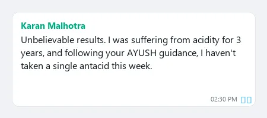
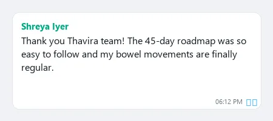
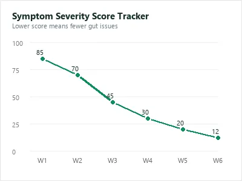
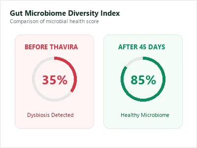
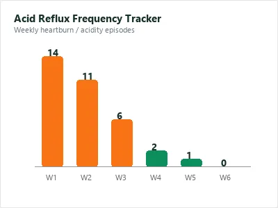

Personalised 1-1 Gut clarity consultation
Book a private ₹199 Gut Clarity Call and understand what your symptom pattern may be pointing toward. Receive doctor-guided clarity and a personalised 45-day next-step direction.
Book My Gut Clarity Call — ₹199
Your Gut Is Not "Just Sensitive." It's Stuck In a Pattern Nobody Has Mapped Yet.
Burning comes back a few hours after the antacid wears off.
Bloating after meals makes you scared of eating normally.
H. Pylori is negative now — but reflux, burning or gastritis still continues.
IBS or SIBO has been mentioned. But nobody has mapped what's actually triggering your specific pattern.
Constipation feels incomplete without a laxative, churan or pressure.
Reports look normal. Your body clearly does not agree
Most chronic gut sufferers move from one temporary fix to the next. Relief comes. Hope comes. Then the same symptom walks back in.
Temporary relief is not root-cause clarity. Until your symptom pattern is mapped properly — the loop keeps restarting.

"I had tried PPIs, probiotics and different diets. This was the first time someone explained WHY my symptoms kept returning."
Similar gut symptoms can have very different causes. Instead of more guessing, your consultation follows a structured doctor-led approach to understand what your next step should be.
We understand your symptoms, triggers, reports, medicines, diet changes and what you've already tried.
Your doctor reviews your symptom pattern and explains the most likely direction instead of another generic recommendation.
Receive doctor-guided next steps so you know exactly what deserves your attention over the coming weeks.
The goal isn't to promise an instant cure. It's to identify the most relevant direction before spending more time, money and energy on treatments that may not fit your symptom pattern.
Once your consultation is confirmed, our care team connects you with the appropriate doctor based on your symptoms and history.

10+ Years Experience

12+ Years Experience
8+ Years Experience
9+ Years Experience
This consultation is designed to answer the questions that often remain unanswered after repeated medicines, diet changes, or "normal" reports.
Understand the likely pattern behind recurring discomfort.
See how acidity, bloating and bowel changes may relate.
Learn which habits or triggers deserve attention.
Replace uncertainty with doctor-guided direction.
Understand the likely next step based on your history.
Leave with a personalized direction instead of random trials.
"For the first time I understood why my symptoms kept returning. I finally knew what to focus on."
— Thavira PatientInstant WhatsApp confirmation after booking.
This ₹199 consultation is designed for people looking for doctor-led clarity—not another round of guesswork.
The ₹199 consultation isn't about selling quick fixes. It's for people who genuinely want doctor-guided clarity before trying another medicine, supplement or diet.
"I waited almost three years because I thought it would get better on its own. I wish I had booked this consultation much earlier."
— Thavira PatientA structured doctor-led consultation focused on understanding your symptoms before trying more random treatments.
Review of your symptoms, reports, previous treatments and health history.
Understand recurring symptom patterns instead of looking at isolated issues.
Discuss current medicines, food habits and daily routines.
Doctor-guided discussion about the likely direction behind your symptoms.
Clear guidance on what deserves your focus over the next few weeks.
Online consultation after your appointment slot is confirmed.
These stories come from patients who struggled with recurring acidity, IBS, SIBO, H. Pylori, constipation and bloating before choosing a doctor-led consultation.

"Antibiotics helped for a while, but the fear of relapse never left until I understood my next step."
"I kept changing diets and probiotics. The consultation helped connect all my symptoms."
"Temporary relief became a cycle. Now I finally understand why."
"Daily laxatives weren't solving the real issue."





Join thousands of patients who chose clarity before more random treatments.
We believe you should feel confident before making even a ₹199 commitment.
Your consultation is designed to provide doctor-led clarity about your symptoms and the most appropriate next step.
You'll receive confirmation after payment, followed by communication from our team.
Once your appointment is confirmed, your consultation is conducted with a doctor.
The consultation focuses on helping you understand your condition and possible next steps. There is no obligation to continue with any additional services.
If you need to change your appointment, our support team will assist you according to the applicable scheduling policy.
Important: Do not stop or change any prescribed medicines without guidance from your treating doctor.
Here are the most common questions people ask before booking their ₹199 Gut Clarity Consultation.
This is a doctor-led Gut Clarity Consultation. Its purpose is to understand your symptoms, discuss possible root-cause direction, and recommend personalized next steps. It is not a complete treatment program.
Yes. After your payment is confirmed, our team contacts you on WhatsApp, schedules a suitable appointment, and your consultation is conducted with a doctor.
You'll receive WhatsApp confirmation, our team will help finalize your appointment, and then you'll attend your scheduled doctor consultation online.
Many people have already tried multiple approaches before booking. This consultation focuses on understanding your individual symptom pattern and providing personalized doctor-led direction rather than offering one generic solution.
No. Do not stop or change prescribed medicines without guidance from your treating doctor.
No. The consultation is designed for people experiencing chronic gut issues such as recurring acidity, GERD, bloating, constipation, IBS, SIBO, H. Pylori, indigestion and similar digestive concerns.
Yes. If you need to change your appointment, please contact our support team. Rescheduling is handled according to our appointment policy.
No. The ₹199 consultation is intended to provide clarity and personalized next-step guidance. There is no obligation to purchase any additional services.
Chronic digestive symptoms often continue to affect work, travel, sleep and daily life. Booking now helps you receive doctor-led clarity sooner instead of continuing with uncertainty. Appointment availability depends on doctor schedules.
✔ Doctor Consultation
✔ WhatsApp Confirmation
✔ Personalized Direction
✔ ₹199 Consultation
One keeps you in the same cycle. The other gives you doctor-led clarity about what to do next.
One doctor-led Gut Clarity Consultation
Book My ₹199 Gut Clarity Call Instant WhatsApp confirmation after payment.